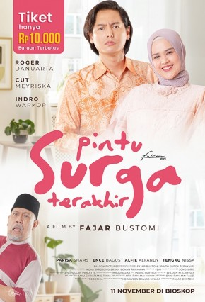

Pintu Surga Terakhir
Irma adalah seorang wanita karir yang sukses.
Di usianya yang kini sudah lebih dari cukup untuk menikah, dia malah banyak menolak pinangan dari laki-laki yang serius dengannya.
Alasannya karena Irma ingin tetap merawat ayahnya yang dia anggap sebagai pintu menuju surga semenjak Ibunya wafat.
Suatu hari tanpa sengaja dia bertemu dengan seorang Fotografer, Yusuf, laki-laki dari masa lalunya yang dulu menghilang tanpa kabar.
Apakah Irma akan rela melepas pintu surga terakhirnya demi cinta yang dia sudah pendam lama? Atau dia harus memendam cintanya lagi?
Back to List